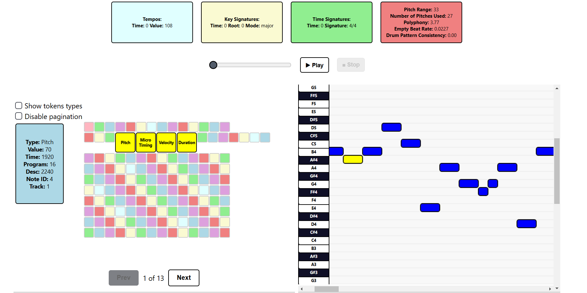

Added functionalities:
- Miditok library upgrade: from 2.1.7 to 3.0.4
- Added PerTok tokenizator
- New logics of corresponding notes with tokens (forced by library upgrade)
- New parameters in configuration (mostly for PetTok): use_programs, use_microtiming, ticks_per_quarter, max_microtiming_shift, num_microtiming_bins
- Default tokenizator classes, now associating notes to tokens is run after we receive tokens, unifed functions for all tokenizers depending on "use_programs" parameter usage
frontend:
- New design in general
- Subtle animations
- New piano roll- high resoultion, stable keybord so it does not vanish with scrolling
- Tokens can be paginated and scaled
- New audio player

Deployment
You can see an example deployment on Railway here As long as we're above our trial limit on Railway
Running locally:
You can use same commands as before to run the project locally.
Frontend
Basic run:
cd frontend
npm install
npm run dev
Using Docker:
cd frontend
docker build . -t frontend
docker run frontend -p 3000:3000
Backend
Basic run:
cd backend
poetry shell
poetry install
python -m core.main
or
poetry run python -m core.main
Using Docker:
cd backend
DOCKER_BUILDKIT=1 docker build --target=runtime . -t backend
docker run backend -p 8000:8000
All at once:
docker-compose up
Contributors
- Karol Bogumił
- Maksymilian Banach
- Jakub Przesmycki